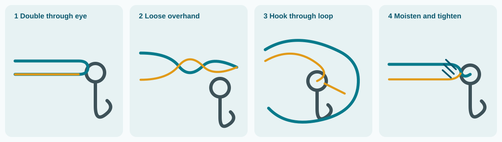
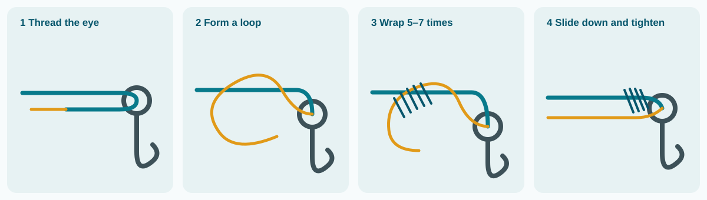
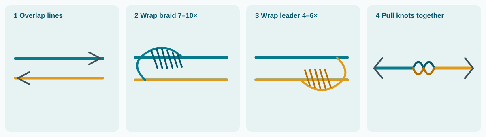
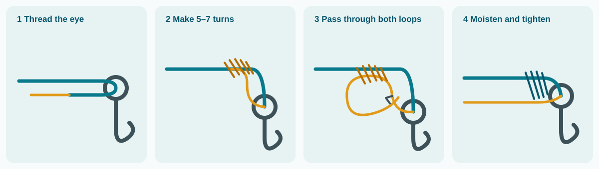

1Light flats and reef
Rod7–7½ ft medium
Reel3000–4000 spinning
Main line15–20 lb braid
Leader20–30 lb fluorocarbon
Best for: pompano, yellowtail, mangrove snapper, hogfish, small tripletail and casting shrimp or jigs.
A practical starting point for choosing rods, reels, line, leaders, hooks and rigs around Marathon—plus four knots worth learning before the boat leaves the dock.
Reel size numbers are approximate and vary by manufacturer. Match the rod’s printed line and lure rating to the line class—not only the reel number. Move toward the heavier end near bridges, wrecks, strong current or large fish.
Best for: pompano, yellowtail, mangrove snapper, hogfish, small tripletail and casting shrimp or jigs.
Best for: permit, mutton snapper, mahi, cobia, blackfin tuna and medium barracuda.
Best for: black grouper, greater amberjack and extracting fish before they reach structure.
Best for: adult tarpon at bridges, channels and passes. Lighter tackle is suitable for juveniles.
Best for: sailfish, mahi, blackfin and wahoo. Add 80–130 lb wire for wahoo.
If buying only one setup: a 7 ft medium-heavy spinning rod, quality 5000–6000 reel, 30 lb braid and spools of 30, 40 and 60 lb leader cover the broadest range of Marathon fishing.
| Material | Use it for | What to know |
|---|---|---|
| Braid | Most spinning and vertical-jigging setups | Thin diameter, long casts and high sensitivity. It has little stretch, so use a mono or fluorocarbon leader and a smooth drag. |
| Monofilament | Trolling, shock leaders and beginner-friendly reels | Stretch cushions surges and knots easily. It is thicker and less sensitive than braid. |
| Fluorocarbon | Leader around clear water and wary fish | Low visibility and abrasion resistance. Stiffer and more expensive; inspect after every fish or reef contact. |
| Wire | Wahoo and barracuda bite protection | Use the shortest practical section. Wire reduces bite-offs but can reduce bites from line-shy fish. |
Hook size is not standardized across brands. Choose the smallest hook with enough gap to clear the bait and the fish’s jaw, then confirm that the point remains fully exposed.
Use a non-stainless-steel, non-offset (inline) circle hook with natural bait when targeting snapper, grouper, amberjack, hogfish and other reef fish. Keep a dehooking device and a descending device or venting tool rigged and ready. Exact gear requirements change across Atlantic/Gulf and state/federal boundaries, but this hook is the safest all-around Keys choice.
Best for live or dead natural bait and fish likely to be released.
Useful for artificial lures, jigs and some trolling rigs where an active hook-set is part of the technique.
The Palomar is the best first knot for most anglers, but no single knot wins every job. Use the quick chooser below, then follow the matching four-picture sequence—on a phone, swipe the pictures sideways. Tie slowly, keep wraps neat, moisten mono or fluorocarbon before cinching, and retie anything crossed, burned or uneven.

Why it ranks first: strong, quick and particularly dependable with braid. Make sure the doubled strands never cross.

Why it ranks second: it works across a wide range of mono and fluorocarbon sizes, including heavier leader where an improved clinch is a poor choice.

Why it ranks third: it is the easiest dependable line-to-leader knot to learn. An FG knot is slimmer through rod guides and better for very different diameters, but takes more practice.

Why it ranks fourth: useful and familiar for light mono or fluorocarbon, but less versatile than the Uni. Do not rely on it for braid or leader over 30 lb.
Final check: pull every finished knot hard with protected hands before fishing it. Leave a small tag, inspect the first several feet of leader after every fish, and retie after abrasion or a hard impact.
main line → leader → circle hook
main line → sliding sinker → bead → swivel → 3–8 ft leader → circle hook
main line → egg sinker → swivel or hook → short leader
light main line → 15–25 lb fluorocarbon → #1–2/0 circle hook
main line → heavy shock leader → ball-bearing swivel → wire → lure
braid → 4–8 ft leader → solid ring/split ring → assist-hook jig
Technique and gear guidance checked August 30, 2026 against FWC Reef Fish Gear Rules, FWC Fish Handling and Gear, FWC Fishing Basics, the FWC Fishing Lines field guide and Berkley’s knot guide. Tackle ranges are practical starting points; current, structure, fish size and manufacturer ratings can require adjustment.